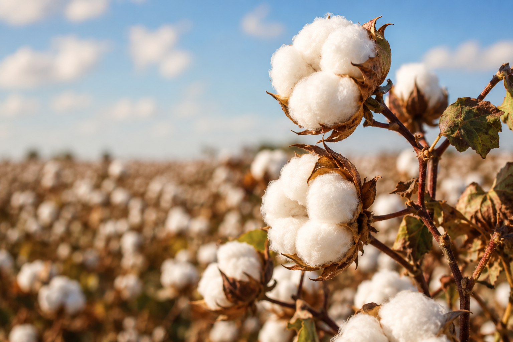

Cotton (scientifically known as Gossypium) is one of the most important fiber crops in the world and is widely used in the textile industry. It belongs to the mallow family and grows best in warm climates with moderate rainfall and plenty of sunshine. The cotton plant usually grows to about 1 to 2 meters in height and produces soft white fibers around its seeds, known as cotton bolls. It generally takes about 5 to 6 months to mature, depending on the variety and environmental conditions.
Countries like India, China, the United States, and Brazil are among the leading producers of cotton.Cotton is mainly cultivated in black soil regions because this soil retains moisture and supports healthy plant growth.
Cotton is an important commercial crop and supports the livelihood of millions of farmers and workers. The fibers obtained from cotton are used to make clothes, bedsheets, towels, and many other textile products. Cotton cultivation involves sowing seeds, irrigating fields, protecting crops from pests, and harvesting the mature cotton bolls when they burst open.Cotton also contributes significantly to the economy through textile production, trade, and employment opportunities around the world.
